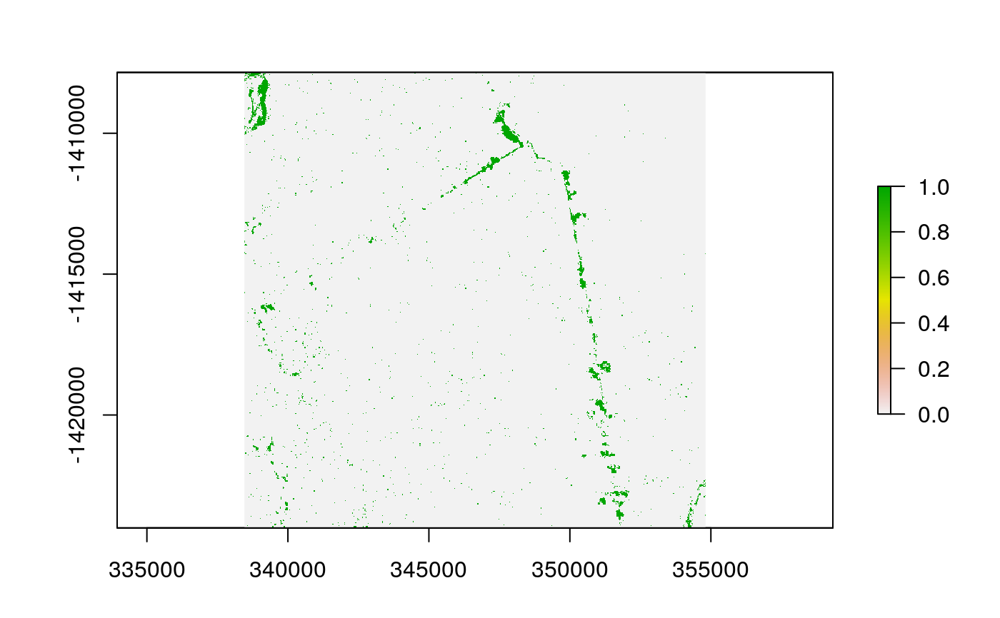

Change detection using the PVts-\(\beta\) approach
pvts.RdChange detection using the PVts-\(\beta\) approach
pvts(x, startm, endm, threshold = 5, img, tr, time = FALSE, vf = FALSE)
Arguments
| x | Vector, Matrix, RasterStack, RasterBrick |
|---|---|
| startm | The start of the monitoring time |
| endm | The end of the monitoring time |
| threshold | The default threshold is 5 for photosynthetic vegetation, while for indices such as NDVI and EVI the threshold is 3. Please see Tarazona et al. (2018) for more details. |
| img | The image of the position immediately before the monitoring start, i.e. the "start-1" position (in case "x" is a matrix). |
| tr | The vector of the analysis time range must contain the start time of the time series, the end time and the frequency of the series. For example: tr <- c(1990, 2017, 1) (i.e., the time series starts in 1990, ends in 2017 and has an annual frequency of 1). See ts for more details. |
| time | If it is TRUE the plotting will be with time coordinates (only if the "tr" parameter is within the function). |
<<<<<<< HEAD
=======
| vf | If the monitoring is with Photosynthetic Vegetation series, then switch to TRUE. |
>>>>>>> dev
References
Tarazona, Y., Mantas, V.M., Pereira, A.J.S.C. (2018). Improving tropical deforestation detection through using photosynthetic vegetation time series – (PVts-\(\beta\)). Ecological Indicators, 94, 367 379.
Note
In order to optimise the detections, it is advisable to make a smoothing through the smootH function before detecting changes. The smoothing will allow to eliminate outliers that were not eliminated during the masking of atmospheric artifacts.
Examples
======= cd <- pvts(x=vec, startm=19, endm=19, threshold= 5)library(ForesToolboxRS) <<<<<<< HEAD library(raster) img_list <- system.file("PVts", package="ForesToolboxRS") %>% list.files("\\.tif$",full.names = TRUE) ======= library(forecast) library(raster) >>>>>>> dev # Example 1. vec <- c(0.86,0.93,0.97,0.91,0.95,0.96,0.91,0.88,0.92,0.89,0.90,0.89,0.91,0.92,0.89, 0.90,0.92,0.84,0.46,0.20,0.27,0.22,0.52,0.63,0.61,0.67,0.64,0.86) # photosynthetic vegetation # time series between 1990 and 2017 # We will detect changes in 2008 (position 19) <<<<<<< HEAD vec <- c(0.86, 0.93, 0.97, 0.91, 0.95, 0.96, 0.91, 0.88, 0.92, 0.89, 0.90, 0.89, 0.91, 0.92, 0.89, 0.90, 0.92, 0.84, 0.46, 0.20, 0.27, 0.22, 0.52, 0.63, 0.61, 0.67, 0.64, 0.86) cd <- pvts(x = vec, start = 18, end = 19, threshold = 5)#Example 2. #Change monitoring period 2006-2016. Where 2000 is position 1 and #2004 is position 5 imgs <- brick(system.file("evi/evi20002016.tif", package="ForesToolboxRS")) cd <- pvts(x=imgs, startm=1, endm=5, threshold=3) # EVI indices plot(cd)